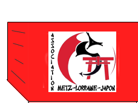

INFORMATION
Soirée japonaise à METZ

L'association Metz Lorraine
Japon organise sa quatrième soirée japonaise
placée sous les signes de la gastronomie nippone , des arts martiaux
et des arts traditionnels japonais ..
Repas japonais complet, apéritif, thé
Spectacle: lecture contée et cérémonie de thé;
démonstrations d'iaido,de karaté, de kendo;
expositions et dégustation sont au rendez vous du plaisir des yeux
et des papilles...
Réservez rapidement la date du 31 mars 2007 et retenez votre
participation à cette soirée d'évasion au Pays du Soleil
Levant.
Bulletin
de participation ci joint.
Pour s'inscrire , téléphoner
à:
Association Metz Lorraine Japon 03/87/76/90/52 06/62/48/90/52
www.asso-metzlorrainejapon.org
Cordiales salutations
Michel et Annie Hommel